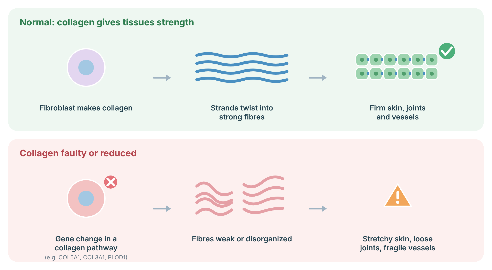
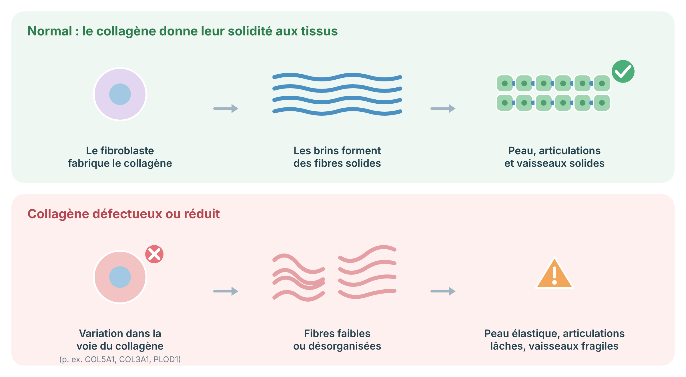
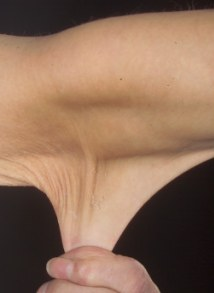

A clinical protocol for classical EDS: skin hyperextensibility, atrophic scarring and joint hypermobility due to COL5A1/COL5A2 variants, covering the 2017 criteria, genetic testing, skin and wound care, and family counselling.
Protocole clinique du SED classique : hyperextensibilité cutanée, cicatrices atrophiques et hypermobilité articulaire liées à des variants COL5A1/COL5A2, couvrant les critères de 2017, le test génétique, les soins de la peau et des plaies, et le conseil familial.
Classical Ehlers-Danlos syndrome (cEDS) is an inherited condition of the connective tissue. The skin is very stretchy, soft and fragile: it splits easily after minor injury and heals with wide, thin scars. Joints are often very flexible and bruising is common. It is caused by a change in a collagen gene, most often COL5A1. Serious problems with blood vessels are uncommon, and with skin protection and good wound care most people lead full lives.
Le syndrome d’Ehlers-Danlos classique (SEDc) est une maladie héréditaire du tissu conjonctif. La peau est très extensible, douce et fragile : elle se fend facilement après un traumatisme mineur et guérit en laissant des cicatrices larges et minces. Les articulations sont souvent très souples et les ecchymoses sont fréquentes. Il est causé par une modification d’un gène du collagène, le plus souvent COL5A1. Les problèmes graves des vaisseaux sanguins sont peu fréquents, et avec une protection de la peau et de bons soins des plaies, la plupart des personnes mènent une vie active.
Classical EDS is an autosomal dominant disorder of type V collagen. Most affected individuals have a heterozygous pathogenic variant in COL5A1 or, less often, COL5A2; a specific COL1A1 variant (c.934C>T, p.Arg312Cys) causes a similar picture with a risk of arterial rupture. The cardinal features are skin hyperextensibility with atrophic scarring and generalized joint hypermobility. Unlike hEDS, cEDS has a molecular cause, so confirmation by genetic testing is recommended (Malfait 2017; Bowen 2017).
Le SED classique est une maladie autosomique dominante du collagène de type V. La plupart des personnes atteintes portent un variant pathogène hétérozygote de COL5A1 ou, moins souvent, de COL5A2; un variant précis de COL1A1 (c.934C>T, p.Arg312Cys) cause un tableau semblable avec un risque de rupture artérielle. Les signes cardinaux sont l’hyperextensibilité cutanée avec cicatrices atrophiques et l’hypermobilité articulaire généralisée. Contrairement au SEDh, le SEDc a une cause moléculaire; une confirmation par test génétique est donc recommandée (Malfait 2017; Bowen 2017).
Collagen is the main protein that gives skin, joints, ligaments and blood vessels their strength. Cells called fibroblasts make collagen chains that twist together and are cross-linked into strong fibres. In the Ehlers–Danlos syndromes, a change in a collagen gene or in an enzyme that processes collagen makes the fibres weaker or disorganized, so tissues stretch, bruise or tear more easily. For hypermobile EDS, the gene(s) are not yet known.

Sources: Malfait F, et al. Nat Rev Dis Primers 2020;6:64 (PubMed).
Le collagène est la principale protéine qui donne leur solidité à la peau, aux articulations, aux ligaments et aux vaisseaux. Des cellules appelées fibroblastes fabriquent des chaînes de collagène qui s’enroulent et se relient en fibres solides. Dans les syndromes d’Ehlers-Danlos, une variation d’un gène du collagène ou d’une enzyme qui le transforme rend les fibres plus faibles ou désorganisées : les tissus s’étirent, marquent ou se déchirent plus facilement. Pour le SED hypermobile, le ou les gènes ne sont pas encore connus.

Sources : Malfait F, et al. Nat Rev Dis Primers 2020;6:64 (PubMed).
| 2017 criteria (Malfait 2017) | Features |
|---|---|
| Critères de 2017 (Malfait 2017) | Caractéristiques |
| Major 1 | Skin hyperextensibility and atrophic scarring |
| Majeur 1 | Hyperextensibilité cutanée et cicatrices atrophiques |
| Major 2 | Generalized joint hypermobility |
| Majeur 2 | Hypermobilité articulaire généralisée |
| Minor | Easy bruising; soft, doughy skin; skin fragility or traumatic splitting; molluscoid pseudotumours; subcutaneous spheroids; hernia (or history); epicanthal folds; complications of joint hypermobility (sprains, (sub)luxation, pain, flexible flatfoot); family history of a first-degree relative who meets criteria |
| Mineurs | Ecchymoses faciles; peau douce et pâteuse; fragilité cutanée ou déchirures traumatiques; pseudotumeurs molluscoïdes; sphéroïdes sous-cutanés; hernie (ou antécédent); replis épicanthiques; complications de l’hypermobilité (entorses, (sub)luxations, douleur, pied plat souple); apparenté au premier degré répondant aux critères |
| Minimal criteria suggesting cEDS | Major 1 plus either Major 2 or at least 3 minor criteria. Confirm with molecular testing. |
| Critères minimaux évoquant un SEDc | Majeur 1 plus Majeur 2 ou au moins 3 critères mineurs. Confirmer par test moléculaire. |

cEDS is passed on in a dominant way: each child of an affected person has a 1 in 2 chance of inheriting the gene change. Some people are the first in their family (a new change).
Le SEDc se transmet de façon dominante : chaque enfant d’une personne atteinte a une chance sur deux d’hériter de la modification génétique. Certaines personnes sont les premières atteintes de leur famille (modification nouvelle).
| Gene | Notes |
|---|---|
| Gène | Notes |
| COL5A1 | Most common cause; frequently null-allele (haploinsufficiency) variants |
| COL5A1 | Cause la plus fréquente; souvent des variants à allèle nul (haplo-insuffisance) |
| COL5A2 | Less common |
| COL5A2 | Moins fréquent |
| COL1A1 p.Arg312Cys | Classical-like skin and joints with risk of arterial rupture; manage vascular risk as in vEDS |
| COL1A1 p.Arg312Cys | Atteinte cutanée et articulaire de type classique avec risque de rupture artérielle; prendre en charge le risque vasculaire comme dans le SEDv |
Protecting the skin is the main goal: padding over shins and knees for children and in sports, careful wound closure, and telling surgeons and dentists about your diagnosis. Physiotherapy helps with joint stability and pain.
Protéger la peau est l’objectif principal : protections aux tibias et aux genoux chez l’enfant et dans les sports, fermeture soigneuse des plaies, et informer chirurgiens et dentistes du diagnostic. La physiothérapie aide à la stabilité articulaire et à la douleur.
These organizations offer reliable information and support. Your genetics team can also connect you with local specialists.
Ces organismes offrent de l’information fiable et du soutien. Votre équipe de génétique peut aussi vous orienter vers des spécialistes près de chez vous.
Video: diet and supplements in EDS (Dr. Heidi Collins, physician with EDS). General nutrition advice for all EDS types; not specific to classical EDS.
Vidéo : alimentation et suppléments dans le SED (Dre Heidi Collins, médecin atteinte du SED). Conseils nutritionnels généraux pour tous les types de SED; non spécifiques au SED classique. (En anglais.)
Related protocols: hEDS / HSD · Classical EDS · Vascular EDS · Kyphoscoliotic EDS.
Protocoles apparentés : SEDh / TSH · SED classique · SED vasculaire · SED cyphoscoliotique.